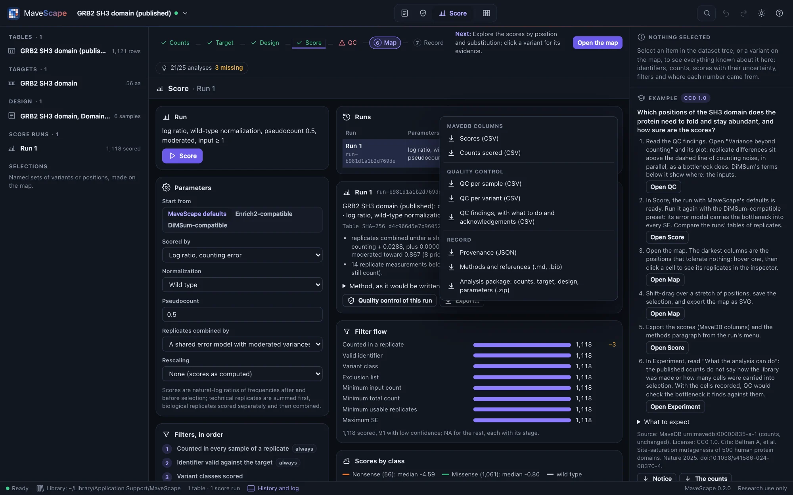
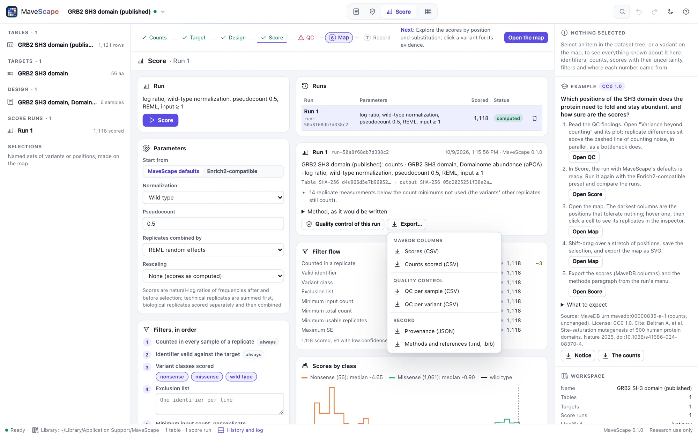

Exports and the record
What leaves MaveScape is meant to be checked: scores in MaveDB's columns, the counts they came from, quality control, provenance with every checksum, and the methods with their references. The workspace archive holds all of it, and reopens identically.
A run's files


| File | What it holds |
|---|---|
*_scores.csv | Every variant's score, SE and 95% interval, the replicates used, its status (scored, low confidence, filtered at which stage, or not measured) and flags, τ², I², the leave-one-out change and each replicate's score, with MaveDB's identifier columns (hgvs_nt, hgvs_splice, hgvs_pro) |
*_counts.csv | The counts the run scored, in the same columns (a table of barcodes: each barcode with its variant); scored again they give the run's output hash |
*_qc_samples.csv, *_qc_variants.csv | Quality control per sample and per variant |
*_qc_findings.csv | The QC findings: each with its status, value and threshold, what could cause it, what to do next, and its acknowledgement with the reason |
*_barcodes.csv | A table of barcodes, barcode by barcode: its variant, and in each replicate its counts, score and SE, departure from its variant's other barcodes, whether it is an outlier and whether it was used |
*_differential.csv | With conditions compared: every variant's difference against the reference condition, its SE, 95% interval, z or t, p and q, the pairs or replicates behind it, and why there is none |
*_provenance.json | The inputs with their SHA-256 checksums, the parameters, the software and its commit, the QC findings (with any acknowledgement) and thresholds, and the files exported |
*_methods.md, *_references.bib | A methods paragraph written from the run (the design, what the assay measures and what was not recorded, the scoring, the QC with any acknowledged finding and its reason), with its references in order and as BibTeX |
*_package.zip | The analysis package: the count table as imported, the target, the design, the design as a sample sheet, the parameters, the readiness, and a README with the mavescape run command and what is missing (The design). Scored from its own files, it gives the run's output hash |
Exported scores are read back to the last bit and open in MaveScape again as MaveDB score tables.
The workspace archive
Workspace archive (.msz)… in the workspace menu writes one file with everything needed to reopen the analysis on another computer: the workspace (targets, design, runs, selections, QC thresholds and acknowledgements, and the chained history), each run's scores, the methods with references, and the count tables (or, if you prefer, only their checksums). Opened again, each run is recomputed from the archived table and must reproduce its recorded output hash.
- Archives are deterministic: the same workspace gives the same bytes in every time zone.
- A manifest lists every file's SHA-256; an edited run, table or history entry is reported on opening.
- Archives from a newer MaveScape, without a manifest, with paths outside the archive, or inflating beyond their declared size are refused.
- An archive whose workspace is already in the library opens as a copy, so neither overwrites the other.
- Archives saved by earlier releases keep opening: the validation keeps one from each release (0.1.0's, and 0.2.0's with every kind of source and run it brought) and checks that this MaveScape opens it and reproduces its runs.
Formats
FORMATS.md describes every column of every export and the archive's layout.